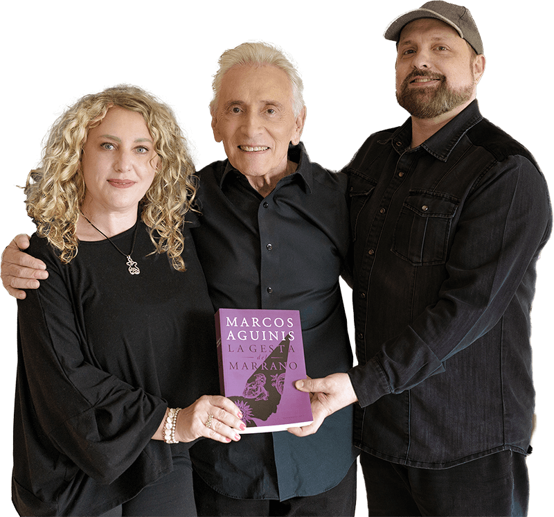

Dedicados a transformar ideas en narrativas audio visuales que cautivan y resuenan con la audiencia. ¿Cómo lo hacemos? No somos solo una productora audiovisual, somos contadores de historias apasionados que decidieron convertir su amor por el cine en una forma de vida.
Una historia que no debería ser real. No debería ser real, pero lo fue. Y queremos contarla,porque sabemos que de los errores se aprende.
Francisco Maldonado Da Silva, fue un joven médico judío, que sufrió los castigos de la Inquisición española en la América colonial del siglo XVI y XVII. Su historia es real y, el escritor argentino Marcos Aguinis, la cuenta con exquisita belleza en su novela La gesta del marrano.
Sobre esta obra, acompañados y alentados por el escritor, estamos creando una miniserie en la que el horror de la persecución y la tortura no logran aplacar a un corazón libre. Ambientada en nuestra américa colonial, La gesta del marrano, retrata un recorrido heroico y demuestra, nuevamente, que de los momentos más oscuros surgen las lecciones más luminosas.
Sergio comenzó su carrera en el mundo del cine y la televisión como director de comerciales en Estados Unidos. Tras su regreso a su país natal, se sumergió en la creación de series de televisión, donde no solo escribió y dirigió, sino que también trabajó codo a codo con reconocidos actores como Norman Briski, Juan Gil Navarro y Alejandro Awada, entre otros.
En 2004, Sergio dio un gran salto con su primer largometraje, Dead Line. Este proyecto marcó un antes y un después en su carrera, siendo una producción con alcance internacional que abrió nuevas puertas.
Continuó con la dirección de Bone Breaker y más tarde con Visitante de invierno, un proyecto revolucionario que no solo se estrenó en salas comerciales, sino que también marcó el retorno al género en el cine nacional. Gracias a este trabajo pionero, después de dos décadas otros cineastas argentinos del género pudieron llevar sus películas a la gran pantalla. Posteriormente, escribió y dirigió Número 8 y Leviatán, consolidando su lugar en la industria.
Su talento no se limitó al género de terror. Escribió el guión de Balas kosher, una comedia de acción que cobró vida en Sólo se vive una vez, una película protagonizada por Gérard Depardieu, Peter Lanzani y Santiago Segura. Más recientemente, fue el guionista de El último hereje.
Actualmente, Sergio está inmerso en un nuevo desafío: la escritura del guión para la miniserie La gesta del marrano, basada en la obra del aclamado escritor argentino Marcos Aguinis.
Desde siempre, el arte, la creatividad y los negocios han sido su esencia. Comenzó estudiando Bellas Artes en Argentina y más tarde se sumergió en el mundo del diseño y la dirección creativa en Montreal, Canadá. Allí, perfeccionó sus habilidades y desarrolló una visión estratégica en el ámbito del marketing y la creatividad.
En Montreal, fundó y dirigió PeopleLikeUs, una agencia de marketing creativo que rápidamente ganó reconocimiento. Al frente de esta agencia, lideró proyectos importantes y colaboró con marcas de renombre, creando campañas que sobresalieron por su impacto y originalidad.
Esta experiencia, liderando grandes equipos multidisciplinarios en proyectos de diversa índole, fue la plataforma para crear Scooch Over Films; una productora que nace de la pasión por contar historias y la búsqueda de nuevos horizontes.
PRENSA
silvanawaisberg@gmail.com
CONTACTO
gaby@scoochover.com